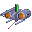

Shop and Purchase Rules
Although purchases in general are a non-action (compounds and variants being the exceptions), each shop section follows slightly different purchase rules. These are all explained here, followed by the lists of items.
An items Owner is ONLY the player on the items Owner tab.
"Limit 1" items may only be purchased once per player per update.
Compounds are purchased by making a Build action. Terrain is purchased with the Compound, and cannot be added after it is built.
Defenses and Add-Ons may only be purchased for a compound you Own, and may be purchased at any time, even if you are not on the compound.
You may purchase mobile weapons, WMDs, cargo or pilots at your position at any time, or for a base/ship/fleet if you are on it. You may also purchase mobile weapons, WMDs or pilots for a base/ship/fleet you Own at any time, even if you are not on it.
Ships may be purchased at your position or on a base that you Own at any time IF that position is Friendly Territory.
Services may only be purchased at your position, and may only be purchased in Friendly or Contested Territory. They are 1/2 price in Friendly Territory.
Variants may only be purchased for a unit by its Owner, and it requires a Refit action. Soft refits can be made anywhere, but Hard refits must be made on compounds.
Compounds and Compound Accessories
Compounds
Compounds, which consist of Facilities and Installations, may be purchased through a build action, and consist of any stationary defensive location. Fortresses and Fortress equipped colonies count as Installations and can control territory, while the rest of the compounds count as Fortifications and cannot control territory. All compounds must have a Terrain chosen from the Terrain list.
Only up to four Compounds at a given Position will produce income.

Ruin
Even the most powerful defensive position in history at some point turns to rubble due to war, deceit, or the passage of time. Every compound that is destroyed becomes a Ruin, which retains its terrain bonuses and can still field a small fighting force. Ruins do not contest or control territory, but can still be moved to as a seperate position, and can be rebuilt back to a Fortification in the same area.
-
- Standard defenses: None, max. 0
- Built-in accessories: Makeshift HQ
- Hangar capacity: 1x infantry, 2x mobile suit, 1x vehicle, 1x mobile armor
- Income: None
- Restrictions: Ruins count as the grade of territory of the Location they reside in, and may not purchase add-ons other than minefields, trenches and listening posts.
- Cost: N/A, created as the result of a destroyed compound
- Special: Ruins can be rebuilt into a Fortification for a build action and 275 RP.

Derelict Colony
Hundreds of space colonies were destroyed in the early weeks of the war, and while most are now only floating debris, a few remain as monstrous hulks, possibly with a few areas still pressurized. These derelicts can be important tactical positions to a military, which can hide ships inside the colonies or their monstrous shadows. Derelicts can be purchased, but may also be created as the result of a destroyed Colony, much like Ruins.
-
- Standard defenses: None, max. 2
- Built-in accessories: Damaged Mirrors, Damaged Hydroponics, Damaged Propulsion System, Ship Dock, Makeshift HQ
- Hangar Capacity: 1x infantry, 6x mobile suit, 8x vehicle, 2x mobile armor
- Income: None
- Restrictions: Only purchasable at Sides 1, 2 or 4. May not purchase add-ons other than minefield and listening post.
- Cost: 200 RP
- Special: Derelicts may be repaired into functional colonies for a build action and 800 RP. Derelicts may be purchased two at a time in a bunch formation for 375 RP.

Fortification
In essence, a mini-base. These are little more than a hanger for mobile suit placement, and an airfield. They have no walls guarding it, no heavily armored buildings, etc, but are good for the economist, or somebody wanting a cheap, quick, stopgap measure to guard something.
-
- Standard defenses: None, max. 20x
- Built-in accessories: Airfield, Hangar, Barracks, Cellblock, Radar/Communications Tower, HQ, Port if Coastal/Island/Naval
- Hangar capacity: 4x infantry, 8x mobile suit, 10x vehicle, 2x mobile armor
- Income: 40 RP
- Cost: 300 RP
- Special: Fortifications can be upgraded to a Fortress with a second Build action.

Mine
The Mine is a fairly straightforward operation, yet it is an excellent money maker. Mines are built and deployed on their own, or attached to a Fortress as an add-on. They slowly suck minerals, Helium 3, ore, Vespine Gas, crude oil, Tiberium, or whatever other local asset out of the ground, and bring income to it's owner.
-
- Standard defenses: None, max. 5x
- Built-in accessories: Mining Compound, Airfield, Hangar, Barracks, Radar/Communications Tower, HQ
- Hangar Capacity: 2x infantry, 4x mobile suit, 1x vehicle, 1x mobile armor
- Income: 80 RP
- Cost: 350 RP
- Special: One Mine can be purchased on an existing Fortification or Fortress as an add-on for a build action.

Asteroid Mine
An asteroid half the size of a colony, this is a true symbol of economic might. Passages colonize its interior, making it easy to mine valuable ores from inside. Due to the activity on a mine, few fixed defenses can be placed on an active Mine, but you can always move one Asteroid Mine to orbit around a friendly colony for protection.
-
- Standard defenses: None, max. 5x
- Built-in accessories: Mining Tunnels, Hangar, Ship Dock, Barracks, Comm Room, HQ, Propulsion System
- Hangar Capacity: 2x infantry, 4x mobile suit, 5x fighter, 1x mobile armor
- Move Rate: 1/4th normal
- Income: 80 RP
- Cost: 400 RP
- Special: One Asteroid Mine can be purchased to orbit an existing Space Colony for a build action.

Fortress
The Gundam equivalent of a military base, a Fortress is a symbol of power wherever it is constructed and allows you to control the nearby terrain. A Fortress is essentially a group of factories, warehouses, barracks, hangars and such surrounded by a large, thick concrete wall. Fixed defenses can be purchased as well to increase the ability of your base to survive an attack.
-
- Standard defenses: None, max. 40x
- Built-in accessories: Outer Wall, Repair Bay, Airfield, Hangar, Barracks, Cellblock, Radar/Communications Tower, HQ, Port if Coastal/Island/Naval
- Hangar Capacity: 10x infantry, 25x mobile suit, 40x vehicle, 5x mobile armor
- Income: 120 RP
- Cost: 1,200 RP
- Special: Fortresses can only be built with a build action on an existing Fortification.

Mirrored Space Colony
This sixty-kilometer long cylinder is home to five million people. Inside, people go about their daily lives as though they were on Earth. Although designed to house a civilian population, space colonies can be equipped with a small defensive armament, and have a large hangar. While a Facility normally, a Fortress can be built inside a Space Colony, upgrading it to an Installation.
-
- Standard defenses: None, max. 10x
- Built-in accessories: Reflective Mirrors, Hydroponics bays, Propulsion System, Repair Bay, Hangar, Barracks, Ship Dock, HQ, Comm Room
- Hangar Capacity: 4x infantry, 17x mobile suit, 20x vehicle, 3x mobile armor
- Move rate: 1/4th normal
- Income: 120 RP
- Restrictions: Only purchasable at Sides 1, 2, 4 or 6
- Cost: 1,500 RP
- Special: Space colonies can be purchased two at a time in a bunch formation for 2,700 RP. A Fortification may be built on a Mirrored Space Colony.

Sealed Space Colony
Similar to the standard colony, the "Sealed" colony was built primarily in the Zeon homeland of Side Three. Unlike a conventional colony, the Zeon Sealed Colonies had no windows, enabling them to house up to ten million people, while light was provided giant fluorescent arrays. These make the Sealed Colony more expensive to construct, but make it more difficult to destroy in general, as there are no weak windows to aim for. All other aspects are the same as a regular colony.
-
- Standard defenses: None, max. 10x
- Built-in accessories: Solar Panels, Hydroponics bays, Propulsion System, Repair Bay, Hangar, Barracks, Ship Dock, HQ, Comm Room
- Hangar Capacity: 4x infantry, 17x mobile suit, 20x vehicle, 3x mobile armor
- Move rate: 1/4th normal
- Income: 120 RP
- Restrictions: Only purchasable at Side 3
- Cost: 1,600 RP
- Special: Sealed colonies can be purchased two at a time in a bunch formation for 2,800 RP. A Fortification may be built on a Sealed Space Colony.
Terrain
Each Compound must be built with a type of Terrain. While standard and coastal are free and make limited changes to the compound, there are also more expensive options that can deter enemy units, such as Desert or Arctic. Some bases must have a paid-for option to be placed in a specific area, such as Naval or Island for a compound in an ocean sector. You can buy combinations of terrain, but some combinations aren't allowed. Please use common sense.
Standard
Built in a normal, pleasant or temperate environment on the plains, steppe or rolling hills, these fortresses are often the cheapest to construct and maintain, but do not offer the geographical bonuses of other options. In the case of Space Colonies and Asteroid Mines, this is the normal option.
-
- Advantages: None
- Disadvantages: None
- Cost: Free

Coastal
Built into the coast, these fortresses include a harbor for tendering marine vessels and controlling the seas. Although this will increase the number of theatres your fortress can effectively support, at the same time it will increase the number of ways in which it can be attacked.
-
- Advantages: Naval ships can move to and be repaired on a Coastal base.
- Disadvantages: Allows the base to be amphibiously assaulted.
- Cost: Free

Arctic
In order to facilitate your rule in frozen tundra type areas, these specialized fortresses will be necessary. Outfitted with much more insulation on structures, better anti-freeze systems and other such details, fixed defenses can function well enough here, but performance of mobile suits and mobile armors will be hampered. Defending player-controlled mobile suits and armors can be outfitted with gear to survive such an environment, though only specialized grunt suits can operate at peak efficiency.
-
- Advantages: Cold Climate mobile suits can work wonders here while other, standard-issue suits will take a beating.
- Disadvantages: Only Cold Climate grunt suits can work at peak efficiency here. Standard mobile suits will grind to a halt in the cold.
- Cost: 50 RP

Desert
In need of extra cooling systems and other such gear, fortresses in desert climates and on barren worlds will need these extra outfittings. Again, defending player-controlled mobile suits can be outfitted with gear to survive the extreme environment, but only specialized mobile suits operate at peak efficiency.
-
- Advantages: Mobile suits designed for these extreme environments work well here.
- Disadvantages: Sand can badly clog up vents and weapons on conventional mobile suits and mobile armors.
- Cost: 50 RP

Sealed
Cities on moons and the martian surface are semi-underground, buildings built on the surface with extensive basements connecting them, and the entire complex sealed from the inhospitable void outside. Most cities on the moon are built around craters, which facilitate this kind of building perfectly. These cities, and cities that are completely underground, are the only possible way to build a habitable settlement on the lunar or martian surface.
-
- Advantages: Allows the compound to be built on a moon or Mars.
- Disadvantages: Accidental explosions can cause depressurization easily.
- Cost: 50 RP
Tropical
In need of extra radiators and other such gear, tropical and heavily forested climates spell trouble for mobile suits. Defending player-controlled mobile suits can be outfitted with gear to prevent moisture and undergrowth from damaging systems, but only specialized mobile suits operate at peak efficiency.
-
- Advantages: Mobile suits designed for these extreme environments work well here.
- Disadvantages: Moisture can badly damage electronics and weapons on conventional mobile suits and mobile armors.
- Cost: 50 RP

Island
Built on top of a small island with the coast as perimeter defenses, these fortresses are difficult to get on or off of. Attacking units will find the combination of having to cross the water to fight on land aggravating, whereas defending units will find retreat an equally difficult option.
-
- Advantages: Attacking mobile suits will have to move across water or air to assualt the base. Non Hovercraft Land Battleships cannot move to this base.
- Disadvantages: The islands small size will make it more susceptible to bombing, and retreat will be difficult.
- Cost: 100 RP

Mountain
Built into the side of a mountain, mountain fortresses are almost as hard to capture as underground bases, though easier to destroy. Attacking mobile suits will have to scale the mountain itself all the while being hailed by machine gun and mega particle cannon fire. Also, thanks to thinning atmosphere, aircraft cannot function with their usual lethality.
-
- Advantages: Enemy aircraft will be restricted and land forces will advance more slowly.
- Disadvantages: Your own aircraft will have a hard time due to thinning atmosphere.
- Cost: 200 RP

Urban
Genocidal maniacs love this little ditty, your base is built right in the middle of a massive city! Maneuvering is hard, firing without hitting civilians is harder, and battles will look like the first episode of Robotech. If combined with an underground base, you could literally create the most advanced base in the history of Anime. Yes, NERV is now at your disposal.
-
- Advantages: The city this base is placed inside produces an income, much like a mine, and the buildings provide good cover for friendly units.
- Disadvantages: To put it bluntly, the civilians will hate you.
- Income: 40 RP
- Cost: 250 RP

Naval
Essentially a gigantic ship, a floating Naval Fortress floats on the surface of the ocean, either anchored to the ocean floor, right along the edge of a beach, or mindlessly wandering the seven seas. From here, submarines, marine mobile suits and marine mobile armors can call home.
-
- Advantages: These fortresses make controlling the seas much more feasible and make attack from conventional mobile suits nearly impossible. Non-Hovercraft Land Battleships cannot move to this Fortress.
- Disadvantages: The large pontoons that keep these structures afloat are excellent targets for mobile armors and submarines that manage to get close enough.
- Note: Naval compounds can move anywhere a Naval ship can move at a 1/4 rate.
- Cost: 300 RP

Space
Large floating spacedocks lacking gravity, a handful of these were made prior to the construction of the space colonies, facilitating the original migrations to Jupiter and the Asteroid Belt. While they have served their purpose economically, Space Fortresses have a new niche as military bases, cheaper to construct than building a fortress inside of a space colony.
-
- Advantages: More compact than a space colony and entirely a military installation, it is much more difficult to infiltrate this fortress than a space colony with a military base inside it.
- Disadvantages: The lack of gravity, as well as lack of size, can cause problems with allied forces.
- Note: Space compounds can move at 1/4th the normal movement rate.
- Cost: 300 RP

Atmospheric
Using multiple Minovski-craft compressors, much like those used on Zeon airborne mobile armors, it is possible to levitate a fortress in orbit, allowing it reign over the wild blue yonder. Halfway between space and earth, an Atmospheric Fortress is excellent for monitoring movement on and off a planet.
-
- Advantages: Because of its altitude, the number of enemy units that can actually attack such a base is very limited. Air units cannot fly high enough, and Space units will be fighting dangerously close to terminal descent elevations.
- Disadvantages: Like the floating Naval Fortress, the Minovski craft compressors are good targets.
- Cost: 500 RP
Underwater
Unlike their floating brethren, these fortresses are actually built as pressurized buildings on the bottom of the ocean with tubes connecting them. Marine mobile suits have even more of an advantage here. However, due to the nature of this location, only Depth Charge launchers and Torpedo batteries can be constructed.
-
- Advantages: Puts marine mobile suits at a ridiculous advantage against assaulting forces and is also increasingly hard to destroy from the surface. Non submersible ships cannot move to this compound.
- Disadvantages: Several good, solid torpedo hits could cause a massive depressurization resulting in a fortresses' destruction.
- Cost: 500 RP

Underground
Perhaps one of the hardest to attack fortresses available, an underground fortress is built completely underground, save for a few camouflaged gates. Pop-up accessories are added to all fixed defenses, allowing them to pop-up out of the ground and surprise enemy units. Even if enemy units manage to locate the entrances to an underground fortress, it will still be hard to take through winding passages and tight corridors.
-
- Advantages: These bases CANNOT be destroyed by anything less than a well-placed tactical nuclear warhead or a full-blown colony drop.
- Disadvantages: There's only one really... Cost! These fortresses are expensive.
- Cost: 750 RP
Combo
Multiple base locations can be purchased at one time for a compound, although some combinations (Airborne+Underground?) are impossible. Don't be a jackass.
Add-ons
While compounds come with their own integral hangars, HQ bunkers and what have you, additional and more sophisticated buildings can be purchased at additional price. These add-ons can be targetted and destroyed by enemy attack, and while integral features of a base can be repaired, add-on features must be repurchased.

Minefield
A simple field of explosive proximity mines, this can be used to delay an enemies advance into a fortress. There are three types of minefield, land mines, underwater mines and space mines, and each must be purchased seperately. Minefields can be purchased while your compound is under siege, albeit at double price.
-
- Note: May be underground, underwater or in space, terrain permitting
- Cost: 150 RP (300 if sieged)

Listening Post (D)
A small outpost at the edge of a bases controlled area, designed as an early warning system against attack. Usually not armed, these posts seek to deter scouts and surprise attacks on the base proper.
-
- Effect: Acts as a detector unit. (D)
- Cost: 200 RP

Perimiter Wall
An outer wall designed to repel a first wave of attack, this add-on enlarges the effective area of a compound, allowing for more defensive emplacements. If purchased for a Space Colony or Asteroid, this in effect redesigns the colonies hull for military use.
-
- Effect: +10 maximum defenses.
- Cost: 200 RP
Trenches
Simple and affordable, mobile suit sized Trenches can be constructed to give your MS defenses just a little bit more surviveability. Unlike most things, Trenches can be purchased while your compound is under seige, albeit at double price.
-
- Note: May be underground, terrain permitting
- Cost: 200 RP (400 if sieged)

Enlarged Barracks
Even though the glory of combat has gone to the mobile suit, infantry can still make a difference, ground forces being required to maintain control of an area or capture an enemy ship. Large bases will increase the size of their barracks, incorporating more security personnel.
-
- Effect: Maximum hangar space +10 infantry.
- Cost: 250 RP

Enlarged Cellblock
While all fortresses carry simple cellblocks, these can be enlarged to make it much more difficult for a captured pilot to escape. This add-on functions as a normal Cellblock where none exist naturally.
-
- Cost: 300 RP
Hospital
All fortresses have clinics where front lines doctors patch the injured up as best they can, but few can boast actual military hospitals. These buildings will assist in tending to the wounded, keeping people fighting even during a long siege.
-
- Effect: Reduces all PCs injury times by 1 while on the compound.
- Cost: 300 RP (200 on Urban)
Targeting Facility
A complex radar, sonar, infrared, and audio tracking station, these facilities stay in the fairly safe portions of a land Fortress for protection and to provide targeting data to friendly turrets, improving their accuracy.
-
- Cost: 400 RP

Enlarged Hangar
Extremely important locations will enlarge and add secondary hangars, to increase the number of servicable units in their territory.
-
- Effect: Maximum hangar space +10 mobile suits and +10 tanks/fighters.
- Cost: 400 RP
Colony Booster
To move your colony quicker or to initiate a colony drop, you need one of these boosters. Simply a large rocket that latches onto the backside of your colony, the Booster is an essential part of all colony movement and allows your colony to move at half the speed of a regular mobile suit, rather than one fourth.
-
- Cost: 1,000 RP
Spaceport
Necessary for construction on terrestrial fortresses, the Spaceport allows regular space warships and mobile suits to land, refuel, and be equipped with single-use boosters to get back into space again, allowing otherwise space-bound vessels and mobile suits to enter Earth. Spaceports may be purchased for a Lunar fortress, but are not necessary for a ship to escape the moons gravity well.
-
- Income: +40 RP
- Cost: 1,500 RP

Nuclear Charge
The ultimate in "Base Insurance," this is actually an Inter-Continental-Ballistic-Missile with the rocket section removed and stripped down to the bare essentials. This charge sits in the middle of a Fortress in wait to be activated. After the entire base's defenses have been destroyed, this charge is activated and will detonate when a mobile suit, tank, or even infantry triumphantly march into the base.
-
- Cost: 2,000 RP

War Factory
The War Factory, once constructed, can harvest the resources needed and then produce any product in the shop. How many can be produced in a one-week production run is based on cost. A War Factory is somewhat different from a mine, as it produces weaponry even during a siege.
-
- Effect: The factory is credited 500 RP every Sunday, which can be used at any time to purchase shop materials at the factories location. Remaining RP is stockpiled until spent.
- Cost: 2,500 RP
Defenses
Clearly even the best base will fall eventually without its own defensive armament. Turrets and gun emplacements can be purchased up to a bases defensive emplacement maximum, to assist in defending the area. (R) marked defenses cannot make All Range Attack actions, but will shell enemy fleets during a siege.

AA machine gun turret
While only remotely effective against mobile suits, these open-ended turrets are inexpensive and excellent against fighter aircraft.
-
- Armament: Four-barreled 45mm rapid-fire machine gun
- Effective VP: 21 (37 with targetting facility)
- Cost: 7 RP

Depth Charge launcher
For anti-submarine warfare, the Depth Charge launcher is the best there is.
-
- Armament: Two-tube Depth Charge discharger
- Effective VP: 21 (37 with targetting facility)
- Cost: 14 RP

SAM battery
A small AA missile turret, this is more effective than the machine guns, but also more expensive.
-
- Armament: Four-tube SAM missile launcher (10 rounds)
- Effective VP: 21 (37 with targetting facility)
- Cost: 14 RP

Cannon turret
A cheap, conventional ground to ground cannon turret.
-
- Armament: Two-barreled 180mm cannon
- Effective VP: 21 (37 with targetting facility)
- Cost: 21 RP

defense Satellite
A small automated drone for perimeter defense against mobile suits.
Armament: 1x Ballistic Cannon (8 rounds), 2x 12-tube missile rack (1 round)
- Effective VP: 21 (37 with targetting facility)
Note: Only purchasable in space. Max 12 per compound, does not count towards defenses maximum.
Cost: 28 RP
Asteroid Rocket Cluster
A cluster of asteroids equipped with rockets, harmless until propelled towards a large target.
-
- Armament: 20x Asteroid Rocket
- Effective VP: 21 (37 with targetting facility)
Note: These clusters do not count towards the total defenses amount, but are limited to three per location. Purchasable in space only.
Cost: 84 RP

MPC turret
Small, fast tracking Mega Particle gun for taking out mobile suits, the ultimate in AA technology.
-
- Armament: 2-barrel Mega Particle Cannon
- Effective VP: 21 (37 with targetting facility)
- Cost: 86 RP
Howitzer (A)
The ultimate in artillery weaponry, the Howitzer is perfect for anti-Siege warfare.
-
- Armament: 880mm rifled howitzer
- Effective VP: 21 (53 with targetting facility)
- Cost: 140 RP
Large MPC (A)
A large, slow moving, anti-ship Mega Particle Cannon, this packs a punch, but has a slow rate of fire compared to the Howitzer.
-
- Armament: Two-barreled Large Mega Particle Cannon
- Effective VP: 21 (53 with targetting facility)
- Cost: 245 RP
Space defense Platform
Built into an Asteroid, this is the best thing you can get for defending a space-based location.
-
- Armament: 12x 2-barrel beam gun turret, 2x heavy rocket launcher turret
- Note: These platforms do not count towards the total defenses amount, but are limited to four per location. Only buildable in space.
- Effective VP: 37 (53 with targetting facility)
- Cost: 350
Anti Orbit Missile Array (A)
This missile launcher fires warheads into a high orbit, specializing in being able to take out troops orbital dropping onto a base.
-
- Note: Only buildable on Earth.
- Armament: 4-silo extended range warhead launcher
- Effective VP: 21 (53 with targetting facility)
- Cost: 560 RP

Extended Range Laser Cannon (A)
Designed to take out a target at long range, these delicate anti-ship cannons are accurate at much longer ranges than an MPC.
-
- Note: Only buildable in space.
- Armament: Long range laser cannon.
- Effective VP: 21 (53 with targetting facility)
- Cost: 560 RP
Mobile Weapons
Ships, Compounds and players MS Teams have hangar slots, which can be filled with different mobile weapons. A hangar is divided into the following different kinds of slots: Cargo, Infantry, Tank, Aircraft, Vehicle, Mobile Suit and Mobile Armor. Each mobile weapon takes up a slot, but certain unit types can only go in certain slots. Use the following scale for referencing what items can go where.
Cargo - Any slot
Infantry - Any slot but Cargo
Tanks - Tank, Vehicle, Mobile Suit, Mobile Armor
Aircraft - Aircraft, Vehicle, Mobile Suit, Mobile Armor
Mobile Suit - Mobile Suit, Mobile Armor
(L) Mobile Suit - 2x Mobile Suit, Mobile Armor
Mobile Armor - Mobile Armor
Infantry
Guerillas
Armed and armored poorer than conventional infantry, guerillas make up for this with determination and patriotism.
-
- Unit size: 12 guerillas
- Equipment: Colt 1911, Pipe Bombs
- Optional Equipment: AK47, RPG-2
- Combat Ability: 18 CP per level
- Cost: 5 RP
Marines
While the Riah Republic is drastically behind the two major powers in military technology, its infantry corps is equally equipped and trained.
-
- Unit size: 12 marines
- Equipment: Glock 17, Grenades
- Optional Equipment: MP5, XM26, GL06
- Combat Ability: 22 CP per level
- Note: Only available if allied with Riah Republic
- Cost: 7 RP
Tanks
Type 50
An old EFF missile platform replaced by the Fanfan, the Type 50 is now popular amongst colony militias.
-
- Fixed Armament: 1x 8-tube missile launcher (1 round)
- Optional Armaments: None
- Optional Equipment: None
- Cost: 2 RP
Depagg
A de-comissioned anti-personell walker, the Depagg is maneuverable but lightly armed.
-
- Fixed Armament: 1x 6-barrel 30mm gatling
- Optional Armament: none
- Optional Equipment: none
- Cost: 7 RP
Type 60
A de-comissioned Federal tank, the Type 60 is identical to the Type 61, albeit with only 1 main cannon.
-
- Fixed Armaments: 1x 150mm smoothbore cannon, 1x 12.7mm machine gun, 8x grenade launcher (1 round)
- Optional Armaments: Explosive or smoke grenades
- Optional Equipment: None
- Cost: 7 RP
Aircraft
Ball K Type
Originally there were both short and long range models of the Ball, but after the failure of the One Week War the K Type was de-comissioned. It is now used by the Riah military and private investors.
-
- Fixed Armaments: 2-barrel 120mm cannon turret (50 rounds)
- Optional Armaments: None
- Optional Equipment: None
- Cost: 2 RP

Ball
Some space militants like to buy a construction pod from the CMC and refit it as a Ball themselves. Others like to buy Balls from the EF through illegal channels. Take your pick.
-
- Fixed Armaments: 1x 180mm cannon (20 rounds)
- Optional Armaments: None
- Optional Equipment: None
- Cost: 3 RP
Dragonfly
A simple propellor driven scout plane, the Dragonfly is not much of a match for the more modern Tin Cod or Dopp fighters.
-
- Fixed Armaments: 2x 25mm vulcan gun
- Optional Armaments: None
- Optional Equipment: None
- Cost: 3 RP

Mongoose
A de-comissioned Federal ground suppression plane, the Mongoose has since been phased out for the more versatile Fly Manta.
-
- Fixed Armaments: 1x 25mm vulcan gun, 1x 40mm cannon
- Optional Armaments: None
- Optional Eqiupment: None
- Cost: 5 RP
Torieres
After the failure of Lourm, the Torieres fighter was de-commissioned and completely replaced by the Saberfish. Torieres are now used by the Riah military, and private investors.
-
- Fixed Armaments: 2x 25mm vulcan gun
- Optional Armaments: None
- Optional Equipment: None
- Cost: 7 RP

Gattle
Now well into the war, Zeon has de-commissioned their Gattle space fighter, making it much easier to find and purchase.
-
- Fixed armaments - 4x 40mm nose vulcans, 2x 5-tube missile launcher (1 round)
- Optional armaments - 4x large rocket
- Optional equipment - none
- Cost: 18 RP
Mobile Suits
Generic Use Mobile Suits
These mobile suits are designed to operate in all environments with relatively equal effectiveness. All mobile suits have anti-personnel weapons which are not listed.
Zaku Worker
Following the Antarctic Treaty, the Duchy of Zeon was forced to sell a large number of Zaku I's in order to pay the refit costs to make their military a non-nuclear entity. Many Zaku Workers found their way to the black market.
-
- Fixed Armaments: None
- Optional Armaments: heat hawk
- Optional Equipment: grenades (3)
- Cost: 23 RP

Zaku I A
Following the Antarctic Treaty, the Duchy of Zeon was forced to sell a large number of Zaku I's in order to pay the refit costs to make their military a non-nuclear entity. Many Zaku I A's found their way to the black market.
-
- Fixed Armaments: None
- Optional Armaments: 105mm machine gun (100 round drum), heat hawk
- Optional Equipment: puncher shield, grenades (3)
- Cost: 30 RP
Zaku II C
Following the Antarctic Treaty, the Duchy of Zeon refitted 95% of its Zaku II C types to either F or J types. The remaining 5% were sold to rich investors, to make up for the Duchy's then failing resources.
-
- Design Features: Anti-radiation plating
- Fixed Armaments: None
- Optional Armaments: 120mm machine gun (100 round drum), 280mm Zaku bazooka (4 round magazine), heat hawk
- Optional Equipment: grenades (3)
- Cost: 42 RP
Zaku II F
Now well into the war, so many Zaku II F type mobile suits have been produced, that it is not surprising how many have made it into the wrong hands.
-
- Fixed Armaments: None
- Optional Armaments: 120mm machine gun (100 round drum), 280mm Zaku bazooka (4 round magazine), heat hawk
- Optional Equipment: grenades (3)
- Cost: 45 RP

GM
Now late in the war, so many GM type mobile suits have been produced, that it is not surprising how many have made it into the wrong hands.
-
- Fixed Armaments: 2x 60mm head vulcan, beam saber
- Optional Armaments: 90mm machine gun (20 round magazine), beam spray gun (10 round charge)
- Optional Equipment: tower shield, grenades (3)
- Cost: 150 RP
Land Use Mobile Suits
Although a pilot could wear a normal suit and fight with these units in space, they become effectively stationary turrets, not mounting the directional thrusters and verniers necessary for space combat.
Petite Mobile Suit
A tank-sized mobile suit, the LMC made Petites are generally used for heavy lifting on the moons surface, but are also used by Lunarian militias and private mercenaries. They are effective against enemy infantry and tanks, but not so much enemy mobile suits.
-
- Fixed Armaments: None
- Optional Armaments: Khrizantema (4 round magazine), Browning M2HB
- Optional Equipment: None
- Cost: 9 RP
- Note: While designed as "land" combat MS, Petites work perfectly well on a colony wall or the moon's surface.
Dracken E
The mobile suit designed by the Riah Republic, the small Dracken E is designed to fight inside colonies. Small and with very simplified weaponry, it is effective against infantry and tanks, but not so much enemy mobile suits.
-
- Fixed Armaments: welding torch, 1x 5-tube grenade launcher (1 round)
- Optional Armaments: Javelin launcher (4 round magazine), M134D
- Optional Equipment: Explosive or smoke grenades
- Cost: 14 RP
- Note: While designed as "land" combat MS, Dracken E's work perfectly well on a colony wall or the moon's surface. Only available if allied with Riah Republic
Ships
Capable of making their own actions, forming fleets and carrying a mobile suit compliment, ships are deciding factors in a battle for multiple reasons. Ships are confined to specific theatres, which are noted in their class, but please use common sense. Ships may only be purchased in friendly territory.
Any item marked "Limit 1" may only be purchased once per player per update. The flags before the item indicate which nation designed them.
Note: All Rogue ships have a Cargo capacity in addition to their Hangar capacity. Zeon and EF ships owned by Rogues are all considered to have a Cargo capacity of 1. Conventional Hangar slots can also hold cargo.
Space Use Ships
Space Shuttle
A civilian transport shuttle, this grade of spacecraft can enter and leave an atmosphere, but is not designed for carrying any serious cargo.
-
- Class: Space support-craft
- Armament: none
- Cargo Capacity: 0
- Hangar Capacity: 1x Infantry
- Launch Catapults: 0
- Cost: 70 RP
Civilian Transport Craft
This medium size transport craft is used both by the CMC, and by the EFF as a personnel carrier.
-
- Class: Space support-craft
- Armament: none
- Cargo Capacity: 2
- Hangar Capacity: 2x mobile suits or 3x infantry
- Launch Catapults: 0
- Cost: 175 RP
Civilian Public
This large model transport was refitted by the Earth Federation to be used as an assault gunship. However, many civilian Publics still exist.
-
- Class: Space support-craft
- Armament: 2x anti-ship rocket. Cannot arm if carrying mobile weapons.
- Cargo Capacity: 1
- Hangar Capacity: 2 mobile suits
- Launch Catapults: 0
- Cost: 210 RP
Republic Patrol Boat (D)
The Riah Republics diplomatic patrol vessel, this small ship is equipped with advanced sensor and communications systems.
-
- Class: Space Support-Craft (D)
- Armament: Long range camera systems
- Cargo Capacity: 1
- Hangar Capacity: 0
- Launch Catapults: 0
- Note: Only available if allied with Riah Republic
- Cost: 210 RP
HLV (O) / Ginga (O)
A spherical drop pod designed to transport large amounts of cargo and make atmospheric re-entry, the HLV was used to great degree by the Duchy of Zeon for the Earth Drop operations.
-
- Class: Space support-craft
- Armament: none
- Cargo Capacity: 1
- Hangar Capacity: 3x mobile suits
- Launch Catapults: 0
- Cost: 245 RP
- Note: HLVs may not move in atmosphere, merely land and take off. A transport service must be used to return it to orbit.
Sodon
A de-comissioned mobile suit transport of the Duchy of Zeon, the Sodon now finds itself in use by the Riah Republic and private investors.
-
- Class: Space support-craft
- Armament: 3x AA machinegun turret
- Cargo Capacity: 1
- Hangar Capacity: 3x mobile suits
- Launch Catapults: 0
- Cost: 280 RP
Republic Patrol Ship
The Riah Republics military battleship, the Republic Patrol Craft is small and fast, designed to be able to fight mobile suits or warships.
-
- Class: Space Carrier
- Armament: 1x fixed 2-barrel fore MPC, 1x AA MPC turret
- Cargo Capacity: 1
- Hangar Capacity: 1x infantry, 2x mobile suits, 2x aircraft
- Launch Catapults: 0
- Note: Only available if allied with Riah Republic
- Cost: 490 RP
Interplanetary Transport Craft
A simple interplanatary transport, this JDEG ship is rarely used anymore, the Jupiter Energy Fleets using primarily the colony-sized Jupitoris.
-
- Class: Space Carrier
- Design Features: Nuclear Pulse Engine, Solar Sail
- Armament: none
- Cargo Capacity: 4
- Hangar Capacity: 1x infantry, 4x mobile suits
- Launch Catapults: 0
- Cost: 700 RP
Jupitoris
The largest and most impressive spaceship to ever be built in the Universal Century, Jupitoris' are monstrous trade ships, capable of carrying enough supplies in one trip to fuel a space colony for several months.
-
- Class: Space Carrier (R)
- Design Features: Nuclear Pulse Engine, Solar Sail
- Armament: 24x AA machine gun turret
- Cargo Capacity: 100
- Hangar Capacity: 6x infantry, 45x mobile suits, 1x Shuttle or mobile armor
- Launch Catapults: 0
- Note: Up to three mobile armors or space shuttles can dock with a Jupitoris. Only available if allied with the JDEG.
- Cost: 7,000 RP
Terrestrial Ships
Heavy Transport
A large transport truck, designed for carrying cargo across large expanses of land.
-
- Class: Land support-craft
- Armament: none
- Cargo Capacity: 1
- Hangar Capacity: 1 mobile suit
- Launch Catapults: 0
- Cost: 70 RP
Cargo Ferry
A large ferryboat designed to transport heavy cargo, these ships are workhorses of the world, carrying much larger quantities of cargo than is capable by aircraft.
-
- Class: Naval support-craft
- Armament: None
- Cargo Capacity: 3
- Hangar Capacity: 1 mobile suit or 2x infantry
- Launch Catapults: 0
- Cost: 140 RP
Cargo Airliner
A huge civilian transport plane. Similar to a Medea in cargo capacity, it unfortunately carries no AA weaponry, and must land to unload its units.
-
- Class: Aerial support-craft
- Armament: none
- Cargo Capacity: 1
- Hangar Capacity: 2 mobile suits
- Launch Catapults: 0
- Cost: 140 RP
Extras
Cargo
Cargo serves a special purpose to a Rogue. Some cargo items have practical uses, others can be sold at specific locations for higher than their buy price, facilitating trade.
Spare Parts
- Effect: Automatically used after battle, causes all friendly Rogues to repair normally.
- Purchase Rate: 30 RP anywhere
- Sell Rate: 20 RP anywhere
Air and Water
- Purchase Rate: 100 RP Earth Orbit
- Sell Rate: 125 RP Side 1/2/4/7, 150 RP Side 6/Moon, 175 RP Side 3/Mars Orbit, 200 RP any JDEG fleet, 500 RP any JDEG base
Helium 3
- Purchase Rate: 100 RP Jupiter Energy Fleet, Free Low Jupiter Orbit
- Sell Rate: 50 RP Mars Orbit, 125 RP Side 1/2/4/6/Moon, 150 RP Side 3, 200 RP Earth Orbit
Luna Titanium
- Purchase Rate: 100 RP Von Braun
- Sell Rate: 50 RP Mars Orbit, 150 RP Side 3/7, 200 RP Earth Orbit/Luna II
Minerals
- Purchase Rate: Free Asteroid Belt Center, 25 RP Mars Orbit
- Sell Rate: 25 RP any JDEG Fleet, 100 RP any JDEG Base, 150 RP Side 3/6, 175 RP Earth Orbit
Refugees
- Purchase Rate: 100 RP at Side 1, 2 or 4
- Sell Rate: 110 RP Side 6, 125 RP Side 3, 150 RP Earth Orbit/Mars Orbit/Asteroid Belt Center, 350 RP JDEG HQ
Weapons of Mass Destruction
The Antarctic Treaty is around, alive and kicking, but it never seems to be so big a deal to actually prevent the liberal use of nuclear warheads in the UC world, and this is reflected here. When purchased, WMDs will remain off a units roster page until they are actually used.
Any item marked "Limit 1" may only be purchased once per player per update.

G3 canister (Limit 1)
A single warhead designed to deliver deadly biological or chemical weapons, this is firable both from a ship or from a mobile suit armed bazooka.
-
- Armament: 1x G3 warhead
- Cost: 700 RP

Nuclear Bomb (Limit 1)
A single tactical nuclear warhead, this is firable both from a ship missile launcher or from a mobile suit armed bazooka.
-
- Armament: 1x nuclear warhead
- Cost: 700 RP

Mass Driver
A gigantic railgun designed to ferry cargo between long distances of space at extreme speeds, it is very easy to modify a Mass Driver into an effective weapon. Designed to fire a heavy armor piercing shell with incredible accuracy and speed, a Mass Driver round does not cause the collateral damage of a nuclear missile, but is deadly all the same. The downside of this weapon is its size and sophistication makes it difficult to arm and aim properly.
-
- Rules: A Mass Driver is attached to a compound like an Add-On, and cannot be moved once purchased. Once built, the driver can target a single compound or fleet per update. This target can be anywhere in the same territory as the Mass Driver, meaning it can fire on an enemy fleet before it actually reaches the weapons location.
- Note: Building this requires a build action. Only buildable in space.
- Income: +100 RP
- Armament: 1x Mass Driver
- Cost: 7,500 RP
Pilots
Pilots of higher levels may be purchased for NPC units, both ships and mobile weapons, to enhance their effectiveness. While sometimes not very cost effective, in the right situations these pilots can be an excellent buy. The Newtype option can be purchased in addition to a standard option, but only if both are purchased together.
Any item marked "Limit 1" may only be purchased once per player per update.
Note: Remember that all Rogue pilots come with the Operative specialization.
Green
Sometimes people are sent straight into combat without training. You may purchase a mobile weapon with a Lvl 0.
-
- Ability: 1 VP, 1 CP + Operative Specialization
- Note: These pilots may only be purchased when their unit is purchased.
- Cost: -25 RP, -50 RP for ships, minimum cost 5 RP
Normal
A standard pilot, given the normal amount of training before being put into combat. Most mobile weapons are purchased with lvl1 pilots.
-
- Ability: 22 VP, 9 CP + Operative Specialization
- Cost: 0 RP
Veteran
Many a mobile suit pilot has been around for awhile, and is better than your average Joe. You may purchase a mobile weapon with a Lvl 2.
-
- Ability: 44 VP, 18 CP + Operative Specialization
- Cost: 50 RP, 100 RP for ships
Experienced
Some pilots are simply above average, though by then they've usually died. You may purchase a mobile weapon with a Lvl 3 pilot.
-
- Ability: 66 VP, 27 CP + Operative Specialization
- Cost: 100 RP, 200 RP for ships
Advanced
Few pilots last this long, but people who know people can usually recruit them. You may purchase a mobile weapon with a Lvl 4 pilot.
-
- Ability: 88 VP, 36 CP + Operative Specialization
- Cost: 300 RP, 600 RP for ships
Newtype (Limit 1)
You've found a guy who wants to work with you who seems sort of... Strange. You may purchase a mobile weapon with a Newtype (N) pilot.
-
- Ability: As pilot level + 2 NT & Operative Specialization
- Cost: 400 RP
Ace
These guys are hard to find, but are more than a match for a Guncannon in a Zaku II. You may purchase a mobile weapon with a Lvl 5 pilot.
-
- Ability: 110 VP, 45 CP + Operative Specialization
- Cost: 500 RP, 1,000 RP for ships
Services
Services are temporary assistance to a PC engagement from NPC forces and patrols. Each Rogue in a battle may purchase one service to assist them. Services may not be purchased in enemy territory, and are 1/2 price in friendly territory.
Guerilla contact
There are many guerillas and militia groups on eager to help an assault if the right incentive is provided.
-
- Effect: Support from 4x guerrilla units.
- Note: Only purchasable in the Earth Sphere.
- Cost: 50 RP
Mechanic contact
Although it is normally very difficult for a Rogue to repair their mobile weapon, they can often enlist the help of professional mechanics before a battle.
-
- Effect: Repair normally after battle, or repair ships at your position one damage grade. In order to use this service to repair ships the Rogue must have access to a Spare Parts cargo (it is not expended) and the ships repaired in this way cannot make any other action that day. This service can only effect units once per update.
- Cost: 50 RP
Transport service
Unable to use Federation or Zeon controlled Spaceports, a Rogue must purchase CMC shuttle fare in order to move themselves on or off of Earth.
-
- Effect: Moves Rogue or Rogue owned ship to/from Earth Orbit.
- Cost: 50 RP
Riah flight support
Members of the Riah Militia can call on Riah patrols to assist them in defending Side 6, much the same way Zeon and Federation members do in their own territory.
-
- Note: Only purchasable if on Side 6 and allied with Riah Republic.
- Effect: Flight support from 6x Torieres fighter or 5x Dracken-E.
- Cost: 50 RP
Merchant contact
There are many CMC merchants travelling to and fro in the Earth Sphere, and for a cost it is possible to obtain a merchant clearance, assisting in evading a blockade.
-
- Effect: Help evading a patrol or blockade.
- Cost: 100 RP
Terrorist contact
Able to infiltrate enemy bases and ships, many Rogues will time their assaults to pre-set explosives, disabling enemy defenses during the attack.
-
- Effect: Bomb a compound or ship during an assault.
- Cost: 100 RP
Dummy units
Space is a large, difficult to monitor place, and sophisticated mobile suit and ship sensors can be fooled by simple tricks. Using thruster-equipped balloons designed to look exactly like the real thing, a fleet can hide its real intentions by deploying a decoy fleet.
-
- Effect: Balloon ship and/or mobile suit purchases.
- Note: Only purchasable in space.
- Cost: 100RP +1/10th of real ship/mobile suit costs +X amount. X may be anything, and exists to disguise the real cost of the dummy fleet from OCD players.
- Addendum: Dummy units are intended to be a way to bend the very linear movement rules in space and trick people. I am willing to accomodate wild nefarious schemes for this service.
Hacker contact
Expert spies, a Rogue is capable of obtaining enemy secrets much easier than his Federation or Zeon counterparts. Purchasing this service requires a Sell action.
-
- Effect: Rogue gains access to either the base Federation or Zeon password. Password will be reset the following Sunday.
- Cost: 1,000 RP
Variants
There are two types of variant options, which can be purchased with a refit action. The first type, soft refits, are reversable and can be purchased anywhere. The second type, hard refits, are irreversable and can only be purchased at an installation. Variants are available both to player and NPC units. The one exception to this rule is Medea B Types, Gyan and Gelgoog variants count as soft refits for player MS and hard refits for NPC MS.
Note: Unlike Ef and Zeon refits, Rogue ships and MS can be refitted multiple times. Each of the special Rogue refits can be put on any ship once. A ship may not have more than five different refits.
Soft Refits
Dom/Rick Dom
Doms can be refitted to operate in both space and land environments by changing out the units legs for a set mounting different kinds of thrusters. When originally purchased, the mobile suit can be equipped in either configuration.
- Cost: Free
GM Command/GM Command Space Type
With a few relatively simple thruster modifications, the high performance GM Command is operable in both terrestrial and space theatres. When originally purchased, this unit can be in either modification.
- Cost: Free
Dom Funf/Dom Tropen
While Dom Funfs in their standard configuration will operate both in space and on land, the space use equipment can be exchanged for bulky radiators, for operating in harsh terrestrial environments. When originally purchased, the mobile suit must be in the Dom Funf configuration.
- Cost: Free

Gyan/Gyan High Mobility Type
Sporting the same frame and equipment as the original Gyan, but with a larger and more powerful backpack, the Gyan High Mobility eats fuel and is hard to handle, but considerably speedier than the original. The HMT's backpack mounts 2 external fuel tanks for extended operations.
- Additional equipment: 2x external fuel tank
- Cost: 50 RP, free for PC units
Gyan/Gyan Cannon (A)
Sporting the same frame and equipment as the original Gyan, the Gyan Cannons backpack also mounts two heavy ballistic cannons for fire support, as well as a grenade launcher mounted in the left arm, beneath the shield, and a more powerful sensor suite in the head.
- Additional armament: 2x 175mm cannon (30 rounds), 1x 3-tube grenade launcher (1 round)
- Cost: 70 RP, free for PC units

Gelgoog/Gelgoog High Mobility Type
Using the same frame and equipment as the original Gelgoog, but with a high performance thruster backpack, the Gelgoog HMT is possibly the most maneuverable mass produced unit of the One Year War, and mounts external fuel tanks for extended operations.
- Additional equipment: 2x external fuel tank
- Cost: 50 RP, free for PC units
Gelgoog/Gelgoog Cannon (A)
Using the same frame and equipment as the original Gelgoog, but with a backpack designed to support a heavy anti-battleship beam cannon. The Gelgoog Cannon is exceptional for ambushes and support fire, the beam cannon packing as much punch as a Musai deck gun, but with a slow rate of fire.
- Additional armament: 1x anti-battleship beam cannon
- Additional equipment: Forearm hardpoints can also mount 3-tube missile launchers (1 round)
- Cost: 70 RP, free for PC units
Harsh Climate Equipment
Making due with what materials they have available, a Rogue can modify his mobile suit to operate in desert, tropical, or arctic conditions with increased effectiveness. The added weight and removal of redundant systems will reduce the mobile suits effectiveness outside of the specified environment.
- Note: Only available to PC mobile suits.
- Cost: 50 RP, will automatically be removed when you leave the harsh climate.
Hard Refits
Cargo Upgrade
- Effect: +1 max Cargo Capacity
- Note: Only available to ships
- Cost: 70 RP
Custom Headspike
Rogues like to modify their units to distinguish them from those used by the regular military. Similar to MS modifications given to military officers, a Rogue can attach additional sensor and comminications antennae to their mobile suit, identifying it as a commander unit. This modification is only available on units without headspikes or commanders antennae.
- Note: Only available to PC mobile suits, gives additional sensor and communication range.
- Cost: 105 RP
Modified Vulcans
A simple and effective weapons modification, a Rogue can equip his mobile suits head with two 40mm vulcan guns. This modification is only available on units without vulcans.
- Note: Only available to PC mobile suits.
- Cost: 105 RP
Optional Armament Upgrade
While your average Rogue cannot obtain as much weaponry or equipment for their mobile suit as a regular military can, especially resourceful people will be seen with weaponry above and beyond a standard armament.
- Note: Only available to PC mobile suits.
- Cost: 105 RP
AA weapons upgrade
- Effect: Improved AA weaponry
- Cost: 175 RP
- Note: The actual weapons system installed will depend on the size of the ship. Only available to ships.
Anti ship weapons upgrade
- Effect: Improved anti ship weaponry
- Cost: 175 RP
- Note: The actual weapons system installed will depend on the size of the ship. Only available to ships.
Armor upgrade
- Effect: Improved armor
- Note: Only available to ships
- Cost: 175 RP
Hangar upgrade
- Effect: +1 MS max hangar capacity
- Note: Only available to ships
- Cost: 175 RP
Engine upgrade
- Effect: Improved speed and maneuverability
- Note: Only available to ships
- Cost: 175 RP
Sensor Upgrade
- Effect: Ship is upgraded to a (D) class unit
- Note: Only available to ships
- Cost: 210 RP
Salvage Equipment
- Effect: Ship is upgraded to an (R) class unit
- Note: Only available to ships
- Cost: 210 RP
Nuclear Pulse Engine
- Effect: Ship is upgraded for interplanetary travel
- Cost: 245 RP
- Note: Space ships only. Don't be a jackass.
Solar Sail
- Effect: Ship is upgraded for interplanetary travel
- Cost: 245 RP
- Note: Space ships only. Don't be a jackass.
|
{kind=link}
{kind=link}
{kind=link}
{kind=link}
{kind=link}
{kind=link}
{kind=link}
{kind=link}
{kind=link}
{kind=link}
{kind=link}
{kind=link}
{kind=link}